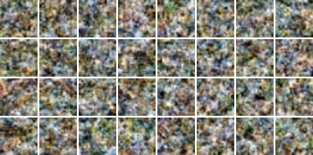
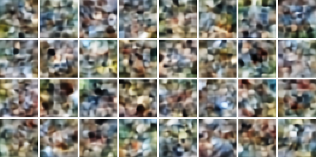
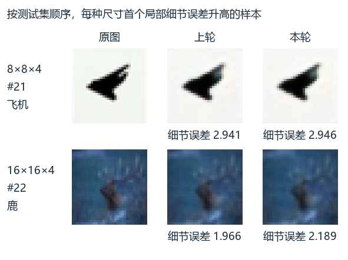

CIFAR-10 重建细节对照
固定同一张原图，比较优化前后的颜色、轮廓和纹理，也可以对照两种潜变量尺寸。
局部放大
点击原图选择 12 × 12 像素区域，或聚焦原图后用方向键移动。
第一组是官方测试集的前 32 张照片。两组生成图各用 32 个从标准正态分布连续抽取的潜变量。三组只作整体外观对照，位置和类别没有一一对应关系。



正在读取测试结果…
整套测试集的重建表现
对官方 10,000 张测试图用后验均值重建。PSNR 和 SSIM 越高越好；细节误差比较像素相对 3 × 3 局部均值的偏差，以 0–255 的强度单位计，越低越好。
| 尺寸 | 版本 | PSNR （dB）↑ | SSIM ↑ | 细节误差 ↓ |
|---|
查看局部细节误差上升的样本
每种尺寸按测试集顺序取第一个误差上升的样本，三列展示同一张照片。

报告与实验文件
修订报告比较两份原始权重的后验分布，并记录在同一训练预算下改变 8 × 8 模型 β 的结果。